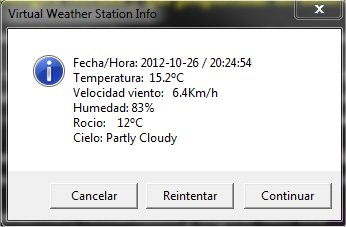
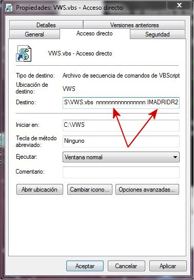
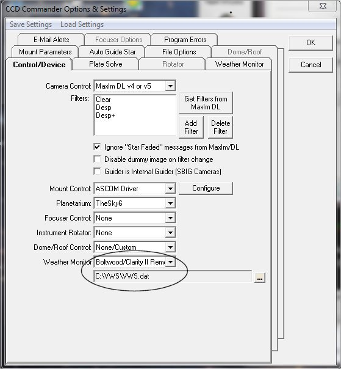
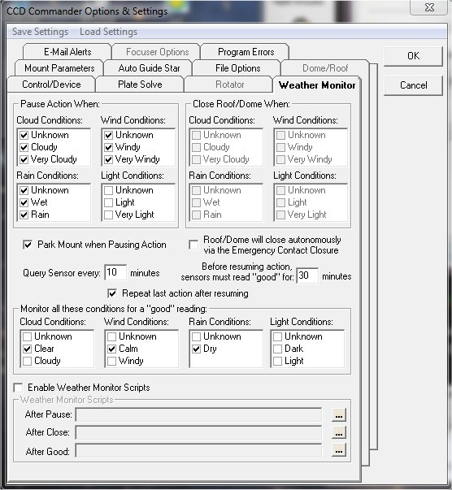
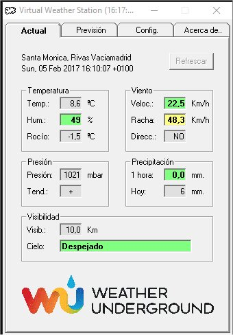

|
Virtual Weather Station |
||
|
|
||
Una vez que has automatizado el observatorio, lo siguiente que uno se plantea es ... dormir a pierna suelta mientras el observatorio hace su trabajo. ¡Qué gozada! Pero enseguida se visualiza sobre nuestra cabeza una nube negra, cargada de agua y acompañada de fuerte viento ... y decides tomarte un café y aguantar despierto controlando a tu inseparable compañero.
Existe un aspecto que marca las necesidades y requisitos del sistema de control del observatorio: la distancia de él a tu cama. No es lo mismo que nos separen 300 Km o que se encuentre en la terraza de la casa donde duermes. En el primer caso cualquier medida de seguridad es poca, puesto que el observatorio debe ser capaz de reaccionar y sobrevivir a cualquier imprevisto ... y los imprevistos tienden a infinito.
Para aquellos que, como es mi caso, han logrado automatizar el observatorio pero que en caso de incidencia actuamos como SARE (Sistema Autónomo de Respuesta a Emergencias) con un "levántate a toda pastilla y mira a ver qué ocurre", va dedicado este trabajo.
Tenía previsto comprarme una estación meteorológica diseñada para utilizar en observatorios astronómicos; de esas que por 500 tienen hasta anemómetro. Estuve analizando prestaciones y la verdad es que son una chulada. Pero al final sólo la iba a utilizar como una simple estación meteorológica (bastante más económica) y como mucho utilizaría uno de los relés para disparar una alarma luminosa en el dormitorio (¡que no es cuestión de despertar a la jefa!). Lo único que me ataba a estas estaciones era su integración con el CCD Commander.
En una de las lecturas sobre prestaciones de estas estaciones me percaté que existía el modo remoto, que básicamente te permite tener la estación en un ordenador, grabar y actualizar los datos de la estación cada cierto tiempo y en cierto formato y, si configuras adecuadamente la red, puedes acceder a ellos con el CCD Commander desde el ordenador que controla el observatorio.
Se me encendió la bombilla: ¿Y si los datos los tomo de una estación meteorológica cercana, proceso los datos y los grabo en el formato que espera el CCD Commander? A fin de cuentas sólo busco saber si se ha nublando o si se está levantando viento. Se planteaban tres retos: averiguar el formato de los datos, buscar una estación meteorológica suficientemente cercana que me proporcionase los datos que necesitaba y lograr hacerme llegar a la mesilla una señal de alarma en caso de problemas.
¡Vamos a ello!
1.- Averiguar el formato de los datos que necesita CCD Commander.
Tras unas cuantas consultas al Oráculo (Google) apareció la respuesta en el User Manual del Cloud Sensor II de Clarity, cap 17: Remote Operation. Con todo lujo de detalles.
2.- Utilizar una estación meteorológica cercana y que proporcione los datos necesarios y fiables.
2.1.- Versión implementada en VB Script.
Como sabéis, existen varias redes de estaciones meteorológicas que realizan un magnífico servicio y que proporcionan unos datos muy fiables. ¡Gracias!
Tras analizar varias alternativas, encontré Weather Underground que para mi suerte tenía dos estaciones a menos de 2 Km de casa. Esta red dispone de un API para desarrolladores con suscripción gratuita que te permite realizar un cierto número de consultas por día, pudiendo seleccionar de qué estación se solicitan los datos y obteniendo el resultado de la consulta en formato XML, entre otros.
Tras analizar diversas alternativas, buscando la simplicidad del código y no meterme en jaleos, opté por usar Windows Script: lenguaje sencillo, no muy amigable para formatear datos de salida, pero como contrapartida dispone de un objeto que permite fácilmente procesar datos en formato XML.
Tras diversas aproximaciones, refinamientos y mejoras salió este VWS.vbs. El código no es muy extenso y seguro que fácilmente mejorable, pero para no ser mi entorno habitual de programación, creo que es aceptable.
Si queréis personalizar el script, al principio encontraréis la definición de una serie de constantes:
' Personalización:
Const LimiteViento = 15 ' 15 Kmh
Const HumedadAlta = 80 ' 80% humedad relativa
strDirectory = "C:\VWS"
strFile = "\VWS.dat"
donde se define la velocidad máxima del viento admisible para que no salte alarma, humedad relativa máxima admisible, directorio donde está instalado el script y el nombre del fichero donde se escribirán los datos que luego utilizará CCD Commander.
Como CCD Commander no tiene alerta por humedad pero si por lluvia, lo que creo que es algo redundante con la condición de nublado, he usado la condición de lluvia para alertar que la humedad relativa es muy alta. Para mi gusto, y en las condiciones donde está mi observatorio, más del 80% es muy alta y por tanto no dejo trabajar al observatorio.
En VWS.dat encontraremos una línea de texto como ésta:
que siguiendo la descripción del formato podrá interpretarse su contenido. Aunque lo importantes son los cuatro últimos dígitos: 1 1 2 0. Un 1 es BIEN y un 2 es MAL. Por órden:
1: BIEN. No está nublado. Admito como válido que el cielo esté despejado o parcialmente nublado.
1: BIEN. La velocidad del viento es inferior a 15 KM/h
2: MAL. La humedad relativa es superior al 80%.
0: No lo utilizo y siempre va a cero. Se podría usar para indicar que hay exceso de luz.
En estas condiciones CCD Commander no me habría permitido trabajar por exceso de humedad.
Cuando se ejecuta el programa, en pantalla aparece una ventana como ésta:

donde se muestra la misma información que en VWS.dat, pero legible para un humano. Esta ventana se refresca cada 5 minutos y aparece en todo el centro de la pantalla. No he encontrado la forma de hacer que recuerde dónde la hemos colocado.
Los botones tienen su función, y dado que no me ha sido posible renombrarlos, he procurado que signifiquen algo parecido a lo que hacen:
Cancelar: Detener la ejecución del programa.
Reintentar: Volver a consultar los datos a la estación meteorológica y refrescarlos en pantalla.
Continuar: Continuar la ejecución del programa en modo background, es decir, sin mostrar esta ventana.
Para que ejecute el programa deberemos indicarle la clave que nos han asignado al realizar nuestro registro gratuito (16 caracteres alfanuméricos) y el código de la estación meteorológica de la que queremos consultar los datos. Creamos un acceso directo desde el escritorio y modificamos las propiedades del acceso directo añadiendo estos dos parámetros:

donde nnnnnnnnnnnnnnnn es el código que nos han asignado y IMADRIDR2 es la estación meteorológica que usaremos.
Si todo se ha hecho bien, podremos ejecutar el programa e ir viendo la ventana con los datos de la estación remota. E incluso podremos ver los datos que se van actualizando en el ficheros de datos que luego utilizará CCD Commander. ¡Por lo que ya tenemos operativa nuestra estación meteorológica remota!
Vamos a configurar CCD Commander para que la utilice. En primer lugar le diremos que tiene una estación remota y dónde está el fichero con los datos:

y a continuación le diremos cómo debe actuar. Ésta es mi configuración:

Desde estos momentos CCD Commander podrá utilizar los datos que obtenemos de la estación remota para controlar las condiciones climatológicas y decidir si puede seguir trabajando o debe parar.
2.2.- Versión implementada en Visual Basic.
A Fernando Campuzano le gustó la idea de la estación meteorológica virtual, y se animó a realizar una implementación en Visual Basic. Y la verdad es que su solución ha mejorado notablemente mi implementación en VB Script. ¡Gracias tocayo!
Además de traducir el script a Visual Basic, ha ampliado la aplicación añadiéndole opciones configurables por el usuario, como valores para la condición "safe", tiempo de refresco, algún parámetro informativo adicional, y búsqueda de estaciones meteorológicas próximas a partir de la dirección IP del usuario (aunque también se pueden añadir manualmente).
En Windows XP el archivo VWS.dat se crea en la carpeta de instalación de la aplicación, pero en Windows 7 y Windows 8 se crea en C:\Users\usuario\AppData\Local\VirtualStore\Program Files (x86)\VWS, así que ojo a la hora de configurar el CCD Commander. En cualquier caso el programa permite definir cualquier otra ruta y evitarnos problemas y confusiones.
Otra de las aportaciones importantes de la versión de Fernando Campuzano es que tienes una pestaña donde podrás ver la previsión meteorológica para las próximas 10 horas. Esta información se actualiza de manera automática cada 60 minutos. Ayuda a ver de un vistazo cómo se presenta la noche.
Y como guinda del pastel, el programa puede configurarse para que envíe alertas al sistema Good Night System.
Después de cada refresco de datos, los botones se quedan inhabilitados durante 20 segundos, con el objeto de evitar que "jugando" con el programa podamos llegar a hacer demasiadas consultas a la web y nos terminen anulando la API key.
Personalmente os recomiendo la implementación de Fernando Campuzano. Dispone de interfaz de configuración (no hay que tocar los fuentes para modificar parámetros) y proporciona cierta información adicional que es muy interesante.

El instalador os lo podéis descargar pinchando AQUÍ, y la instalación es trivial.
3.- Hacer llegar una señal de alarma en caso de problemas.
Quedaría configurar E-Mail Alerts para que en caso de incidencia nos envía un mail de alerta.
Es muy probable que con enviarnos un mail de alerta sea suficiente. Pero en mi caso, si en el iPad activo los sonidos para los mail entrantes ... no iba a pegar ojo en toda la noche, y volvería a estar peor que al principio.
Busqué alternativas hasta que encontré el servicio gratuito de Boxcar : te creas una cuenta de correo en este servicio, y todos los mail que lleguen a esta cuenta hacen que se active una alarma en el iPad. Sólo queda decirle al CCD Commander que los mail de alerta los mande a esa dirección de correo. ¡Y ya está!
Este servicio está disponible en estos momentos para dispositivos Apple, aunque lo tienen anunciado para Windows y Android.
Eso si, no olvides que si suena la alarma, el SARE (es decir, tú) debe actuar: "levántate a toda pastilla y mira a ver qué ocurre" ... para esto aún no tengo solución.
¡Espero os sea de utilidad!